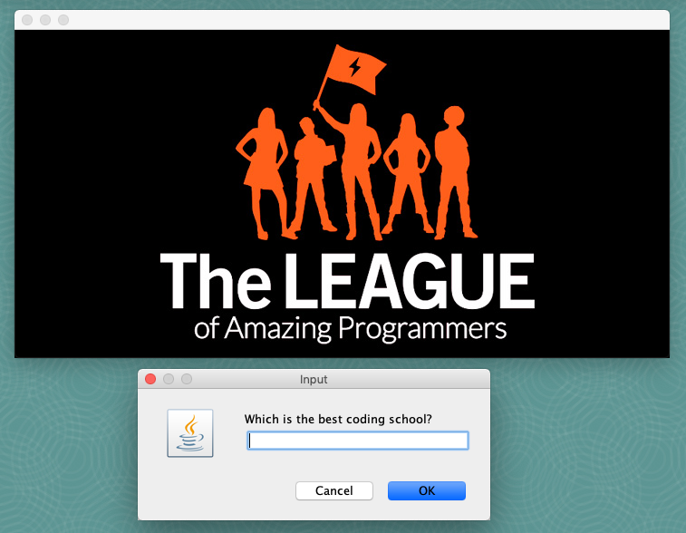

Photo Quiz

Goal:
We are going to use GUI components to make quiz that shows images to the player and asks them questions relating to the images they see.
Steps:
- Create a JFrame. A JFrame is a window that has a border and title. JFrames are invisible when you create them, so you will need to make it visible (follow instructions in the code).
- Create a Component. Call the method provided, to put an image (icon) into the Component (follow instructions in the code).
- Add the Component to the JFrame (follow instructions in the code).
- Packing a JFrame causes it to resize itself so that its components are visible. If you do anything to change the size of its contents, a JFrame should be packed again.
- Use a pop-up to ask the user a question relating to the image and tell them if they get the right answer.
- Replace the Component with another that has a different image and ask a new question (follow instructions in the code).